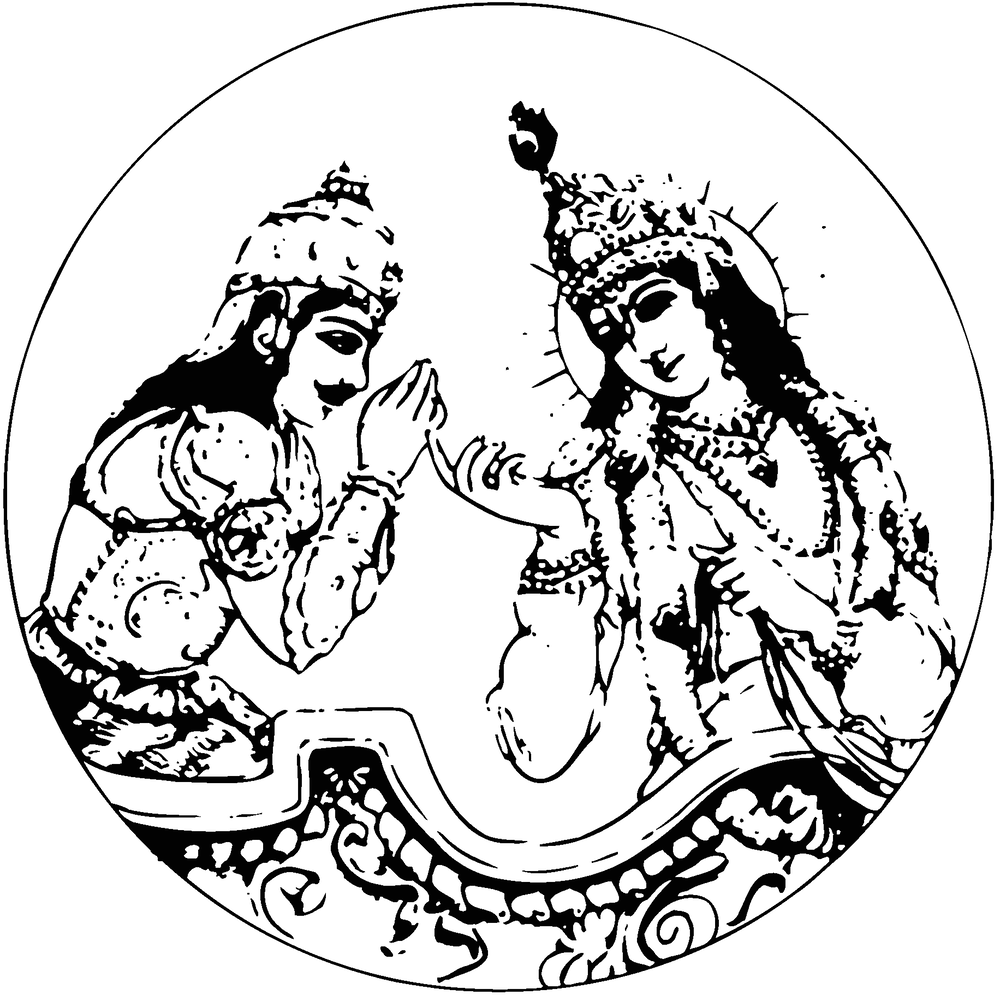

Обзор армий на поле битвы Курукшетра
Бхагавад-гита как она есть
[глава

ГЛАВА ПЕРВАЯ
Обзор армий на поле битвы Курукшетра
1
ТЕКСТ 1.1
Da{tar"Aí)" ovaAca
DamaRºae‡ae ku(ç&ºae‡ae s$amavaetaA yauyauts$ava: /
maAmak(A: paANx"vaAêEva ik(maku(vaRta s$aÃaya // 1 //
dhṛtarāṣṭra uvāca
dharma-kṣetre kuru-kṣetre
samavetā yuyutsavaḥ
māmakāḥ pāṇḍavāś caiva
kim akurvata sañjaya
dhṛtarāṣṭraḥ uvāca - царь Дхритараштра сказал; dharma-kṣetre - в месте паломничества; kuru-kṣetre - в месте под названием Курукшетра; samavetāḥ - собравшиеся; yuyutsavaḥ - желающие вступить в бой; māmakāḥ - те, кто на моей стороне (мои сыновья); pāṇḍavāḥ - сыновья Панду; ca - и; eva - безусловно; kim - что; akurvata - сделали; sañjaya - о Санджая.
Дхритараштра спросил: О Санджая, что стали делать мои сыновья и сыновья Панду, когда, горя желанием вступить в бой, собрались в месте паломничества, на поле Курукшетра?
КОММЕНТАРИЙ: «Бхагавад-гита» — это популярное богословское произведение, суть которого изложена в «Гита-махатмье» («Прославлении „Гиты“»). Там, в частности, говорится, что изучать «Бхагавад-гиту» нужно очень внимательно, с помощью человека, преданного Шри Кришне. В попытках понять ее смысл очень важно избегать предвзятых толкований, продиктованных корыстными мотивами. Пример того, как следует понимать «Бхагавад-гиту», мы находим в самой «Гите»: так понял ее Арджуна, который услышал это произведение из уст Самого Господа. Если человеку посчастливится услышать «Бхагавад-гиту» от истинного представителя Господа и понять ее непредвзято, так, как понял ее Арджуна, можно считать, что он постиг всю мудрость, заключенную в Ведах и других священных писаниях мира. В «Бхагавад-гите» читатель найдет все, что содержится в иных писаниях, а также то, чего нет ни в одной другой книге. В этом уникальность «Бхагавад-гиты». Она представляет собой совершенное теистическое учение, ибо ее поведал Сам Господь Шри Кришна, Верховная Личность Бога.
Беседа Дхритараштры и Санджаи, приведенная в «Махабхарате», составляет канву этого великого философского произведения. Как известно, «Бхагавад-гита» была поведана на поле битвы Курукшетра, которое с незапамятных времен, со времен ведической цивилизации, является местом паломничества. Ее рассказал Сам Господь, когда Он пришел на нашу планету, чтобы указать людям путь к постижению истины.
В этом стихе ключевым является слово дхарма-кшетра (место, где совершаются религиозные обряды), так как в битве на Курукшетре Верховный Господь принял сторону Арджуны. Дхритараштра, отец Кауравов, глубоко сомневался в том, что его сыновьям удастся одержать победу в предстоящем сражении. Эти сомнения заставили его обратиться к своему министру Санджае с вопросом: «Что они стали делать?» Он прекрасно знал, что его сыновья и сыновья его младшего брата Панду собрались на Курукшетре, чтобы вступить в бой, и тем не менее его вопрос не лишен смысла. Он не хотел, чтобы двоюродные братья заключили перемирие, но, в то же время, беспокоился за судьбу своих сыновей и за исход сражения. Поскольку полем сражения выбрали Курукшетру, место, которое, согласно Ведам, является святым даже для небожителей, Дхритараштра боялся, что святое место может повлиять на исход битвы. Он прекрасно понимал, что это влияние будет помогать Арджуне и другим сыновьям Панду, так как все они были праведны от рождения. Санджая был учеником Вьясы и по милости Вьясы, даже находясь в покоях Дхритараштры, мог видеть все, что происходило на поле битвы Курукшетра. Поэтому Дхритараштра спросил его о том, что делается на месте сражения.
Сыновья Панду и сыновья Дхритараштры принадлежали к одному роду, но вопрос Дхритараштры выдает его отношение к племянникам. Он умышленно причисляет к роду Куру только своих сыновей, тем самым лишая сыновей Панду их наследственных прав. Это свидетельствует о нелюбви Дхритараштры к сыновьям Панду.
Итак, с самого начала повествования становится ясно, что на священном поле Курукшетра, где находится сам отец религии, Шри Кришна, будут, словно на рисовом поле во время прополки, вырваны все сорняки (сын Дхритараштры Дурьйодхана и другие) и что победу по воле Господа одержат истинно праведные люди во главе с Юдхиштхирой. Таков смысл слов дхарма-кшетре и куру-кшетре, помимо их значения в контексте ведической культуры и истории.
ТЕКСТ 1.2
2
s$aÃaya ovaAca
ä{"î"A tau paANx"vaAnaIkM( vyaUXM# äu"yaAeRDanastad"A /
@AcaAyaRmaupas$aËÿmya r"AjaA vacanama“avaIta, // 2 //
sañjaya uvāca
dṛṣṭvā tu pāṇḍavānīkaṁ
vyūḍhaṁ duryodhanas tadā
ācāryam upasaṅgamya
rājā vacanam abravīt
sañjayaḥ uvāca - Санджая сказал; dṛṣṭvā - осмотрев; tu - но; pāṇḍava-anīkam - армию Пандавов; vyūḍham - выстроенную в боевые порядки; duryodhanaḥ - царь Дурьйодхана; tadā - тогда; ācāryam - к учителю; upasaṅgamya - подойдя; rājā - царь; vacanam - речь; abravīt - произнес.
Санджая сказал: Оглядев боевые порядки армии сыновей Панду, царь Дурьйодхана подошел к своему учителю и произнес такие слова.
КОММЕНТАРИЙ: Дхритараштра был слеп от рождения. К несчастью, он был лишен и духовного зрения. Он прекрасно знал, что его сыновья так же слепы в вопросах религии, как и он, и был уверен, что они никогда не придут к соглашению с добродетельными от рождения Пандавами. И все же его одолевали сомнения: он не знал, какое влияние окажет на его сыновей место паломничества. Санджая понимал, что́ побудило Дхритараштру спросить, как разворачиваются события на поле битвы. Желая ободрить упавшего духом царя, он заверил его, что его сыновья не собираются идти на мировую, несмотря на влияние святого места. Поэтому он сообщил царю, что его сын Дурьйодхана, оглядев армию Пандавов, подошел к главнокомандующему армии Кауравов, Дроначарье, чтобы рассказать ему о положении дел. Хотя Дурьйодхана назван здесь царем, серьезность ситуации заставила его пойти к главнокомандующему своей армии. Этот поступок выдает в нем искусного политика. Но даже такой опытный дипломат, как Дурьйодхана, не сумел скрыть страха, который он испытал при виде армии Пандавов.
ТЕКСТ 1.3
3
pazyaEtaAM paANx"]pau‡aANAAmaAcaAyaR mah"taI%M camaUma, /
vyaUX#AM åu"pad"pau‡aeNA tava izASyaeNA DaImataA // 3 //
paśyaitāṁ pāṇḍu-putrānām
ācārya mahatīṁ camūm
vyūḍhāṁ drupada-putreṇa
tava śiṣyeṇa dhīmatā
paśya - взгляни; etām - на эту; pāṇḍu-putrānām - сыновей Панду; ācārya - о учитель; mahatīm - огромную; camūm - армию; vyūḍhām - построенную; drupada-putreṇa - сыном Друпады; tava - твоим; śiṣyeṇa - учеником; dhī-matā - мудрым.
Взгляни, о учитель, на огромную армию сыновей Панду, которую так искусно выстроил твой одаренный ученик, сын Друпады.
КОММЕНТАРИЙ: Великий дипломат, Дурьйодхана хотел указать Дроначарье, выдающемуся военачальнику-брахману, на допущенный им промах. Некогда Дроначарья поссорился с царем Друпадой, отцом Драупади, которая потом стала женой Арджуны. Оскорбленный Друпада устроил большое жертвоприношение и получил благословение, по которому у него должен был родиться сын, способный убить Дроначарью. Дроначарья прекрасно знал об этом, но, будучи великодушным брахманом, он не колеблясь открыл все свои военные секреты сыну Друпады, Дхриштадьюмне, когда тот обучался у него воинскому искусству. Теперь на поле битвы Курукшетра Дхриштадьюмна выступал на стороне Пандавов, и именно он построил их армию в боевые порядки, воспользовавшись знаниями, полученными от Дроначарьи. Дурьйодхана указал Дроначарье на допущенную им ошибку, чтобы он был начеку и никого не щадил во время боя. Этими словами он также намекает на то, что Дроначарья не должен проявлять мягкости, сражаясь с Пандавами, которые тоже были его учениками, причем любимыми. Самым любимым и способным учеником Дроначарьи был Арджуна, поэтому Дурьйодхана предупредил Дроначарью, что любая снисходительность на поле боя неминуемо приведет к поражению.
ТЕКСТ 1.4
4
@‡a zAUr"A mahe"SvaAs$aA BaImaAjauRnas$amaA yauiDa /
yauyauDaAnaAe ivar"Aq%ê åu"pad"ê mah"Ar"Ta: // 4 //
atra śūrā maheṣv-āsā
bhīmārjuna-samā yudhi
yuyudhāno virāṭaś ca
drupadaś ca mahā-rathaḥ
atra - здесь; śūrāḥ - герои; mahā-iṣu-āsāḥ - меткие лучники; bhīma-arjuna - Бхиме и Арджуне; samāḥ - равные; yudhi - в бою; yuyudhānaḥ - Ююдхана; virāṭaḥ - Вирата; ca - также; drupadaḥ - Друпада; ca - также; mahā-rathaḥ - великий воин.
В этой армии много отважных лучников, которые не уступают в бою Бхиме и Арджуне. Среди них такие великие воины, как Ююдхана, Вирата и Друпада.
КОММЕНТАРИЙ: Сам по себе Дхриштадьюмна едва ли сумел бы справиться с таким великим и искусным военачальником, как Дроначарья, однако в армии Пандавов было много других воинов, которых нельзя было недооценивать. Дурьйодхана считал их серьезной преградой на пути к победе, ибо каждый из них был столь же могучим, как Бхима и Арджуна. Сила Бхимы и Арджуны была ему известна, и потому Дурьйодхана сравнивает других воинов с ними.
ТЕКСТ 1.5
5
Da{í"ke(tauêeik(taAna: k(AizAr"Ajaê vaIyaRvaAna, /
pauç&ijatku(intaBaAejaê zAEbyaê nar"pauËÿva: // 5 //
dhṛṣṭaketuś cekitānaḥ
kāśirājaś ca vīryavān
purujit kuntibhojaś ca
śaibyaś ca nara-puṅgavaḥ
dhṛṣṭaketuḥ - Дхриштакету; cekitānaḥ - Чекитана; kāśirājaḥ - Кашираджа; ca - и; vīrya-vān - могучий; purujit - Пуруджит; kuntibhojaḥ - Кунтибходжа; ca - и; śaibyaḥ - Шайбья; ca - и; nara-puṅgavaḥ - герой среди людей.
На их стороне великие, храбрые и могучие воины Дхриштакету, Чекитана, Кашираджа, Пуруджит, Кунтибходжа и Шайбья.
ТЕКСТ 1.6
6
yauDaAmanyauê iva‚(Anta oÔamaAEjaAê vaIyaRvaAna, /
s$aAEBa‰"Ae ‰"AEpade"yaAê s$avaR Wva mah"Ar"TaA: // 6 //
yudhāmanyuś ca vikrānta
uttamaujāś ca vīryavān
saubhadro draupadeyāś ca
sarva eva mahā-rathāḥ
yudhāmanyuḥ - Юдхаманью; ca - и; vikrāntaḥ - могучий; uttamaujāḥ - Уттамауджа; ca - и; vīrya-vān - обладающий необыкновенной силой; saubhadraḥ - сын Субхадры; draupadeyāḥ - сыновья Драупади; ca - и; sarve - все; eva - безусловно; mahā-rathāḥ - великие воины, сражающиеся на колесницах.
С ними могучий Юдхаманью, грозный Уттамауджа, а также сын Субхадры и сыновья Драупади. Все они великие воины, владеющие искусством боя на колесницах.
ТЕКСТ 1.7
7
@smaAkM( tau ivaizAí"A yae taAiªabaAeDa iã"jaAeÔama /
naAyak(A mama s$aEnyasya s$aMÁaATa< taAna, “avaIima tae // 7 //
asmākaṁ tu viśiṣṭā ye
tān nibodha dvijottama
nāyakā mama sainyasya
saṁjñārthaṁ tān bravīmi te
asmākam - наши; tu - но; viśiṣṭāḥ - необыкновенно могущественные; ye - которые; tān - их; nibodha - узнай же; dvija-uttama - о лучший из брахманов; nāyakāḥ - военачальники; mama - мои; sainyasya - войска; saṁjñā-artham - к сведению; tān - их; bravīmi - называю; te - тебе.
А теперь, о лучший из брахманов, узнай от меня о выдающихся военачальниках, которые поведут в бой мою армию.
ТЕКСТ 1.8
8
BavaAna, BaISmaê k(NARê k{(paê s$aimaitaMjaya: /
@ìtTaAmaA ivak(NARê s$aAEmad"iÔastaTaEva ca // 8 //
bhavān bhīṣmaś ca karṇaś ca
kṛpaś ca samitiṁ-jayaḥ
aśvatthāmā vikarṇaś ca
saumadattis tathaiva ca
bhavān - ты (досточтимый); bhīṣmaḥ - Бхишма; ca - и; karṇaḥ - Карна; ca - и; kṛpaḥ - Крипа; ca - и; samitim-jayaḥ - побеждающий; aśvatthāmā - Ашваттхама; vikarṇaḥ - Викарна; ca - а также; saumadattiḥ - сын Сомадатты; tathā - также; eva - конечно; ca - и.
Среди них такие непобедимые воины, как ты сам, Бхишма, Карна, Крипа, Ашваттхама, Викарна и сын Сомадатты по имени Бхуришрава.
КОММЕНТАРИЙ: Дурьйодхана перечисляет здесь выдающихся воинов, не знавших поражений. Викарна был братом Дурьйодханы, Ашваттхама — сыном Дроначарьи, а Саумадатти (Бхуришрава) — сыном царя Бахликов. Карна был единоутробным братом Арджуны: он родился у Кунти до того, как она стала женой царя Панду. Крипачарья был братом-близнецом жены Дроначарьи.
ТЕКСТ 1.9
9
@nyae ca bah"va: zAUr"A mad"TaeR tya·(jaIivataA: /
naAnaAzAñ‘ah"r"NAA: s$avaeR yauÜ"ivazAAr"d"A: // 9 //
anye ca bahavaḥ śūrā
mad-arthe tyakta-jīvitāḥ
nānā-śastra-praharaṇāḥ
sarve yuddha-viśāradāḥ
anye - другие; ca - также; bahavaḥ - многие; śūrāḥ - герои; mat-arthe - за меня; tyakta-jīvitāḥ - готовые отдать жизнь; nānā - многими; śastra - видами оружия; praharaṇāḥ - вооруженные; sarve - все; yuddha-viśāradāḥ - опытные в военном деле.
В наших рядах много других героев, готовых отдать за меня свою жизнь. Все они владеют разнообразными видами оружия и опытны в ведении боя.
КОММЕНТАРИЙ: Что касается других воинов, таких как Джаядратха, Критаварма и Шалья, — то все они были готовы сложить головы, сражаясь за Дурьйодхану. Иными словами, их гибель в битве на Курукшетре была предрешена, поскольку они приняли сторону порочного Дурьйодханы. Но сам Дурьйодхана, разумеется, был уверен в победе, рассчитывая на силу всех перечисленных им могучих воинов, которые были его союзниками и друзьями.
ТЕКСТ 1.10
10
@payaARæaM tad"smaAkM( balaM BaISmaAiBar"iºatama, /
payaARæaM itvad"maetaeSaAM balaM BaImaAiBar"iºatama, //10//
aparyāptaṁ tad asmākaṁ
balaṁ bhīṣmābhirakṣitam
paryāptaṁ tv idam eteṣāṁ
balaṁ bhīmābhirakṣitam
aparyāptam - неизмерима; tat - та; asmākam - наша; balam - сила; bhīṣma - Бхишмой; abhirakṣitam - надежно защищенная; paryāptam - ограниченна; tu - но; idam - эта; eteṣām - (этих) Пандавов; balam - сила; bhīma - Бхимой; abhirakṣitam - хорошо защищенная.
Наши силы неизмеримы, а наша армия надежно защищена дедом Бхишмой, тогда как силы Пандавов, которые тщательно обороняет Бхима, ограниченны.
КОММЕНТАРИЙ: Здесь Дурьйодхана дает сравнительную оценку военных сил враждующих сторон. Он считает силу своей армии неизмеримой, в особенности потому, что ее надежно защищает самый опытный военачальник, старейшина рода Бхишма. С другой стороны, силы Пандавов ограниченны и защищены куда менее опытным полководцем, Бхимой, которого никак нельзя сравнивать с Бхишмой. Дурьйодхана всегда ненавидел Бхиму, так как знал, что если ему суждено погибнуть, то убить его может только Бхима. Однако присутствие Бхишмы, который был несравненно более опытным военачальником, вселяло в него уверенность в победе. Иначе говоря, у Дурьйодханы были все основания для того, чтобы рассчитывать на победу в предстоящем сражении.
ТЕКСТ 1.11
11
@yanaeSau ca s$avaeRSau yaTaABaAgAmavaisTataA: /
BaISmamaevaAiBar"ºantau Bavanta: s$avaR Wva ih" //11//
ayaneṣu ca sarveṣu
yathā-bhāgam avasthitāḥ
bhīṣmam evābhirakṣantu
bhavantaḥ sarva eva hi
ayaneṣu - на стратегических позициях; ca - также; sarveṣu - на всех; yathā-bhāgam - раздельно; avasthitāḥ - находящиеся; bhīṣmam - Бхишме; eva - безусловно; abhirakṣantu - пусть оказывают поддержку; bhavantaḥ - вы (досточтимые); sarve - все; eva hi - обязательно.
Каждый из вас, защищая свои позиции в боевых порядках, должен оказывать всемерную поддержку Бхишме.
КОММЕНТАРИЙ: Воздав хвалу доблестному Бхишме, Дурьйодхана подумал, что другие воины могут решить, будто их меньше ценят, и с присущей ему дипломатичностью попытался исправить положение. Дурьйодхана подчеркнул, что Бхишмадева, без сомнения, является величайшим героем, но он уже стар, и потому все остальные должны позаботиться о том, чтобы оградить его со всех сторон. Когда он будет сражаться на одном фланге, враг может воспользоваться этим и напасть с другого фланга, поэтому очень важно, чтобы другие герои все время оставались на своих стратегических позициях, не позволяя противнику прорвать строй. Дурьйодхана сознавал, что победа Кауравов целиком зависела от Бхишмадевы. Он был уверен в поддержке Бхишмадевы и Дроначарьи, ибо прекрасно помнил, что они не проронили ни слова, когда жена Арджуны Драупади, которую Кауравы пытались раздеть на виду у этих великих воинов, в отчаянии взывала к ним, моля о справедливости. Разумеется, Дурьйодхана знал и то, что оба военачальника были по-своему привязаны к Пандавам, но все же надеялся, что они забудут о своей привязанности, как это случилось во время игры в кости между Пандавами и Кауравами.
ТЕКСТ 1.12
12
tasya s$aÃanayana, h"Sa< ku(ç&va{Ü": ipataAmah": /
is$aMh"naAdM" ivanaâAe»aE: zAÊMÿ d"DmaAE ‘ataApavaAna, //12//
tasya sañjanayan harṣaṁ
kuru-vṛddhaḥ pitāmahaḥ
siṁha-nādaṁ vinadyoccaiḥ
śaṅkhaṁ dadhmau pratāpavān
tasya - его; sañjanayan - усиливающий; harṣam - радость; kuru-vṛddhaḥ - старейшина рода Куру (Бхишма); pitāmahaḥ - дед; siṁha-nādam - раскатистый звук, подобный рычанию льва; vinadya - издав; uccaiḥ - очень громко; śaṅkham - в раковину; dadhmau - протрубил; pratāpa-vān - доблестный.
Тогда Бхишма, доблестный старейшина рода Куру, самый почтенный из собравшихся на Курукшетре воинов, громко затрубил в свою раковину, и ее звук, подобный львиному рыку, наполнил радостью сердце Дурьйодханы.
КОММЕНТАРИЙ: Старейшина рода Куру понял чувства и мысли своего внука Дурьйодханы. Испытывая к нему естественную жалость, Бхишма решил ободрить его и громко затрубил в раковину, как бы доказывая, что его недаром сравнивают со львом. С другой стороны, то, что он затрубил в раковину, было символично: тем самым он давал понять своему удрученному внуку Дурьйодхане, что у него нет шансов на победу в сражении, так как на стороне его врагов находится Верховный Господь, Кришна. Однако сам Бхишма, верный долгу, вступит в бой и будет сражаться, чего бы ему это ни стоило.
ТЕКСТ 1.13
13
tata: zAÊÿAê BaeyaRê paNAvaAnak(gAAemauKaA: /
s$ah"s$aEvaAByah"nyanta s$a zAbd"staumaulaAe'Bavata, //13//
tataḥ śaṅkhāś ca bheryaś ca
paṇavānaka-gomukhāḥ
sahasaivābhyahanyanta
sa śabdas tumulo ’bhavat
tataḥ - затем; śaṅkhāḥ - раковины; ca - также; bheryaḥ - большие барабаны; ca - и; paṇava-ānaka - маленькие барабаны и литавры; go-mukhāḥ - и рожки; sahasā - неожиданно; eva - безусловно; abhyahanyanta - одновременно зазвучали; saḥ - этот; śabdaḥ - звук; tumulaḥ - громоподобный; abhavat - был.
Вторя ему, разом зазвучали раковины, барабаны, трубы, горны и рожки, наполнив воздух громоподобным гулом.
ТЕКСТ 1.14
14
tata: ìetaEhR"yaEyauR·e( mah"ita syand"nae isTataAE /
maADava: paANx"vaêEva id"vyaAE zAÊÿAE ‘ad"Dmatau: //14//
tataḥ śvetair hayair yukte
mahati syandane sthitau
mādhavaḥ pāṇḍavaś caiva
divyau śaṅkhau pradadhmatuḥ
tataḥ - затем; śvetaiḥ - белыми; hayaiḥ - лошадьми; yukte - на запряженной; mahati - на великолепной; syandane - на колеснице; sthitau - находившиеся; mādhavaḥ - Кришна (супруг богини удачи); pāṇḍavaḥ - сын Панду (Арджуна); ca - также; eva - безусловно; divyau - в божественные; śaṅkhau - раковины; pradadhmatuḥ - подули.
Затем другой стороне Господь Кришна и Арджуна, стоявшие на великолепной колеснице, запряженной белыми лошадьми, затрубили в свои божественные раковины.
КОММЕНТАРИЙ: В противоположность раковине Бхишмадевы, раковины в руках Кришны и Арджуны названы здесь божественными. Звуки этих божественных раковин свидетельствовали о том, что у противника не было надежды на победу, так как Кришна был на стороне Пандавов. Джайас ту па̄н̣д̣у-путра̄н̣а̄м̇ йеша̄м̇ пакше джана̄рданах̣. Победа неизменно сопутствует людям, подобным сыновьям Панду, поскольку Господь Кришна всегда находится подле них. А где Господь, там и богиня счастья и удачи, которая никогда не расстается со своим супругом. Стало быть, победа и удача ожидали Арджуну, о чем и возвестили трансцендентные звуки раковины Вишну (Господа Кришны). Кроме того, колесница, на которой находились друзья, была подарена Арджуне Агни (богом огня), а это означало, что на ней можно было победить врагов во всех трех мирах и покорить все стороны света.
ТЕКСТ 1.15
15
paAÂajanyaM ô$SaIke(zAAe de"vad"ÔaM DanaÃaya: /
paAENxM") d"DmaAE mah"AzAÊMÿ BaImak(maAR va{k(Aed"r": //15//
pāñcajanyaṁ hṛṣīkeśo
devadattaṁ dhanañ-jayaḥ
pauṇḍraṁ dadhmau mahā-śaṅkhaṁ
bhīma-karmā vṛkodaraḥ
pāñcajanyam - в раковину, называемую Панчаджаньей; hṛṣīka-īśaḥ - Хришикеша (Господь Кришна, повелевающий чувствами Своих преданных); devadattam - в раковину, называемую Девадаттой; dhanam-jayaḥ - Дхананджая (Арджуна, завоеватель богатств); pauṇḍram - в раковину, называемую Паундрой; dadhmau - подул; mahā-śaṅkham - в огромную раковину; bhīma-karmā - совершающий богатырские подвиги; vṛka-udaraḥ - ненасытный едок (Бхима).
Господь Кришна затрубил в Свою раковину Панчаджанью, а Арджуна — в свою, Девадатту; ненасытный Бхима, славный своими богатырскими подвигами, затрубил в свою огромную раковину Паундру.
КОММЕНТАРИЙ: В этом стихе Господь Кришна назван Хришикешей, ибо Он повелитель органов чувств всех живых существ. Живые существа — неотъемлемые частицы Господа, следовательно, их чувства являются частью чувств Господа. Имперсоналисты не могут объяснить происхождение чувств живых существ, поэтому они стремятся представить живые существа лишенными чувств или безличными. На самом же деле чувства живого существа подвластны Господу, пребывающему в сердце каждого: Он управляет ими в той степени, в какой живое существо предается Ему. Что же касается чистых преданных, то Господь непосредственно руководит деятельностью их органов чувств. На поле битвы Курукшетра Господь лично управлял трансцендентными чувствами Арджуны, поэтому Он назван здесь Хришикешей. У Господа много разных имен, в которых отражены различные стороны Его деятельности. Его называют Мадхусуданой, потому что Он сразил демона Мадху, и Говиндой, ибо Он приносит наслаждение коровам и чувствам; Его называют Ва̄судевой, потому что Он появился на земле как сын Васудевы, и Девакинанданой, потому что Своей матерью Он избрал Деваки; Его называют Яшодананданой за то, что Он подарил Свои детские игры Яшоде во Вриндаване, и Партха-Саратхи, так как Он управлял колесницей Своего друга Арджуны. Подобно этому, Господа называют Хришикешей, потому что Он руководил действиями Арджуны на поле битвы Курукшетра.
Арджуна в этом стихе назван Дхананджаей, так как некогда он помог своему старшему брату собрать средства, необходимые, чтобы совершить различные жертвоприношения. А Бхима назван здесь Врикодарой, потому что он славился не только богатырскими подвигами, такими как убийство демона Хидимбы, но и непомерным аппетитом. Итак, звуки раковин, в которые трубили великие герои в рядах Пандавов, начиная с Самого Господа, вселили радость в сердца воинов их армии. Их противники были лишены подобных преимуществ: с ними не было ни Господа Кришны, верховного повелителя, ни богини удачи. Поэтому они были обречены на поражение, о чем и возвестили трубные звуки раковин.
ТЕКСТЫ 1.16–18
18
@nantaivajayaM r"AjaA ku(ntaIpau‡aAe yauiDaiï"r": /
naku(la: s$ah"de"vaê s$auGaAeSamaiNApauSpak(AE //16//
k(Azyaê par"maeSvaAs$a: izAKaNx"I ca mah"Ar"Ta: /
Da{í"âu°aAe ivar"Aq%ê s$aAtyaik(êApar"Aijata: //17//
åu"pad"Ae ‰"AEpade"yaAê s$avaRzA: pa{iTavaIpatae /
s$aAEBa‰"ê mah"AbaAò": zAÊÿAnd"Dmau: pa{Tafpa{Tak,( //18//
anantavijayaṁ rājā
kuntī-putro yudhiṣṭhiraḥ
nakulaḥ sahadevaś ca
sughoṣa-maṇipuṣpakau
kāśyaś ca parameṣv-āsaḥ
śikhaṇḍī ca mahā-rathaḥ
dhṛṣṭadyumno virāṭaś ca
sātyakiś cāparājitaḥ
drupado draupadeyāś ca
sarvaśaḥ pṛthivī-pate
saubhadraś ca mahā-bāhuḥ
śaṅkhān dadhmuḥ pṛthak pṛthak
ananta-vijayam - в раковину Анантавиджаю; rājā - царь; kuntī-putraḥ - сын Кунти; yudhiṣṭhiraḥ - Юдхиштхира; nakulaḥ - Накула; sahadevaḥ - Сахадева; ca - и; sughoṣa-maṇipuṣpakau - в раковины Сугхошу и Манипушпаку; kāśyaḥ - царь Каши (Варанаси); ca - и; parama-iṣu-āsaḥ - великий лучник; śikhaṇḍī - Шикханди; ca - также; mahā-rathaḥ - тот, кто может в одиночку сражаться с тысячами воинов; dhṛṣṭadyumnaḥ - Дхриштадьюмна (сын царя Друпады); virāṭaḥ - Вирата (царь, давший приют Пандавам, когда они вынуждены были скрываться); ca - также; sātyakiḥ - Сатьяки (другое имя Ююдханы, колесничего Господа Кришны); ca - и; aparājitaḥ - непобедимый; drupadaḥ - Друпада, царь Панчалы; draupadeyāḥ - сыновья Драупади; ca - также; sarvaśaḥ - всюду; pṛthivī-pate - о царь; saubhadraḥ - Абхиманью, сын Субхадры; ca - также; mahā-bāhuḥ - могучерукий; śaṅkhān - в раковины; dadhmuḥ - затрубили; pṛthak pṛthak - каждый в отдельности.
Царь Юдхиштхира, сын Кунти, затрубил в свою раковину Анантавиджаю, а Накула и Сахадева — в раковины Сугхошу и Манипушпаку. Великий лучник царь Каши, великий воин Шикханди, Дхриштадьюмна, Вирата, непобедимый Сатьяки, Друпада, сыновья Драупади и другие воины, такие, как могучерукий сын Субхадры, о государь, тоже затрубили каждый в свою раковину.
КОММЕНТАРИЙ: Санджая очень тактично дал понять царю Дхритараштре, что его недальновидная политика, направленная на то, чтобы обмануть сыновей Панду и возвести на престол собственных сыновей, не заслуживала похвалы. Многочисленные признаки свидетельствовали о том, что весь род Куру будет уничтожен в этой великой битве. Начиная со старейшины рода, Бхишмы, и кончая самыми юными его членами (Абхиманью и другими), — все собравшиеся на поле битвы, в том числе и цари многих стран мира, были обречены на смерть. Эта великая трагедия произошла по вине Дхритараштры, который потворствовал своим сыновьям.
ТЕКСТ 1.19
19
s$a GaAeSaAe DaAtaRr"Aí)"ANAAM ô$d"yaAina vyad"Ar"yata, /
naBaê pa{iTavaI%M caEva taumaulaAe'ByanaunaAd"yana, //19//
sa ghoṣo dhārtarāṣṭrāṇāṁ
hṛdayāni vyadārayat
nabhaś ca pṛthivīṁ caiva
tumulo ’bhyanunādayan
saḥ - тот; ghoṣaḥ - звук; dhārtarāṣṭrāṇām - сыновей Дхритараштры; hṛdayāni - сердца; vyadārayat - заставил содрогнуться; nabhaḥ - небо; ca - также; pṛthivīm - поверхность земли; ca - также; eva - безусловно; tumulaḥ - громоподобный; abhyanunādayan - оглашающий.
Громовые звуки их раковин слились в непрерывный гул. Оглашая небо и землю, они заставили содрогнуться сердца сыновей Дхритараштры.
КОММЕНТАРИЙ: Когда Бхишма и другие союзники Дурьйодханы затрубили в свои раковины, сердца Пандавов не дрогнули. Нигде не говорится о том, что звуки их раковин вызвали смятение в рядах противника, но в данном стихе ясно сказано, что звуки раковин, в которые трубили воины Пандавов, заставили трепетать сердца сыновей Дхритараштры. Причиной тому были сами Пандавы и их непоколебимая вера в Господа Кришну. Тот, кто принял покровительство Верховного Господа, не ведает страха даже перед лицом величайшей опасности.
ТЕКСТ 1.20
20
@Ta vyavaisTataAnä{"î"A DaAtaRr"Aí)"Ana, k(ipaDvaja: /
‘ava{Ôae zAñs$ampaAtae Danauç&âmya paANx"va: /
ô$SaIke(zAM tad"A vaAfyaimad"maAh" mah"Ipatae //20//
atha vyavasthitān dṛṣṭvā
dhārtarāṣṭrān kapi-dhvajaḥ
pravṛtte śastra-sampāte
dhanur udyamya pāṇḍavaḥ
hṛṣīkeśaṁ tadā vākyam
idam āha mahī-pate
atha - тогда; vyavasthitān - выстроенных; dṛṣṭvā - оглядев; dhārtarāṣṭrān - сыновей Дхритараштры; kapi-dhvajaḥ - тот, чей флаг был украшен изображением Ханумана; pravṛtte - когда был готов; śastra-sampāte - пускать стрелы; dhanuḥ - лук; udyamya - вскинув; pāṇḍavaḥ - сын Панду (Арджуна); hṛṣīkeśam - Господу Кришне; tadā - тогда; vākyam - речь; idam - эту; āha - произнес; mahī-pate - о царь.
Тогда Арджуна, сын Панду, восседавший на колеснице, которую украшал флаг с изображением Ханумана, вскинул свой лук и приготовился стрелять. Но, взглянув на сыновей Дхритараштры, выстроившихся в боевые колонны, о царь, Арджуна обратился к Господу Кришне с такими словами.
КОММЕНТАРИЙ: До начала битвы оставалось совсем немного времени. Как мы узнали из предыдущего стиха, сыновья Дхритараштры несколько пали духом, поскольку не ожидали увидеть готовую к бою армию Пандавов, которых направлял Сам Господь Кришна. Изображение Ханумана на флаге Арджуны — еще одно предвестие будущей победы Пандавов, так как Хануман вместе с Господом Рамачандрой участвовал в битве против Раваны, в которой Господь Рама одержал победу. И теперь оба они — Рама и Хануман — находились на колеснице Арджуны, чтобы помочь ему в предстоящем сражении. Господь Кришна — это Сам Рама, а где Рама, там и Его вечный слуга Хануман и вечная супруга Сита, богиня счастья и удачи. Поэтому Арджуне не был страшен никакой враг. Более того, Господь Кришна, повелитель чувств, который находился рядом с ним, должен был руководить всеми его действиями и Арджуна во время сражения мог в любой момент получить от Него нужный совет. Все эти благоприятные условия, созданные Господом для Своего вечного слуги, не оставляли никаких сомнений в победе Арджуны.
ТЕКСТЫ 1.21–22
22
@jauRna ovaAca
s$aenayaAeç&BayaAemaRDyae r"TaM sTaApaya mae'cyauta /
yaAvade"taAiªar"Iºae'hM" yaAeä,"Dauk(AmaAnavaisTataAna, //21//
kE(maRyaA s$ah" yaAeÜ"vyamaismana, r"NAs$amauâmae //22//
arjuna uvāca
senayor ubhayor madhye
rathaṁ sthāpaya me ’cyuta
yāvad etān nirīkṣe ’haṁ
yoddhu-kāmān avasthitān
kair mayā saha yoddhavyam
asmin raṇa-samudyame
arjunaḥ uvāca - Арджуна сказал; senayoḥ - армий; ubhayoḥ - двух; madhye - между; ratham - колесницу; sthāpaya - останови; me - мою; acyuta - о непогрешимый; yāvat - пока; etān - на этих; nirīkṣe - гляжу; aham - я; yoddhu-kāmān - желающих сражаться; avasthitān - выстроившихся на поле боя; kaiḥ - с которыми; mayā - мной; saha - вместе; yoddhavyam - необходимость сражаться; asmin - в этой; raṇa - битвы; samudyame - в попытке.
Арджуна сказал: О непогрешимый, прошу Тебя, выведи вперед мою колесницу и поставь ее между двумя армиями, чтобы я мог увидеть тех, кто пришел сюда, желая сразиться с нами, и с кем мне предстоит сойтись в этой великой битве.
КОММЕНТАРИЙ: Господь Кришна — Верховная Личность Бога, но по беспричинной милости Он стал служить Своему другу Арджуне. Ради преданных Господь готов на все, поэтому Арджуна называет Его непогрешимым. Выступая в роли колесничего Арджуны, Кришна должен был выполнять его приказы, и, поскольку Он всегда не колеблясь делал это, Его именуют непогрешимым. Но, даже став колесничим преданного, Господь Кришна не лишился Своего положения. При любых обстоятельствах Кришна остается Верховной Личностью Бога, Хришикешей, повелителем всех чувств. Господа и Его слугу связывают очень теплые, чисто духовные отношения. Слуга Господа всегда готов служить Ему, а Господь постоянно ищет возможности оказать ту или иную услугу преданному. И когда чистый преданный Господа пользуется этим и приказывает Ему, это доставляет Господу гораздо большее удовольствие, чем когда Он Сам отдает приказы. Поскольку Господь — владыка всего сущего, каждый из нас находится в Его власти и никто не вправе приказывать Ему. Но, когда Господь слышит приказ чистого преданного, Он испытывает трансцендентное блаженство, несмотря на то что всегда и всюду остается непогрешимым и всемогущим владыкой.
Будучи чистым преданным Господа, Арджуна не хотел воевать со своими двоюродными братьями, но он был вынужден вступить в сражение из-за упрямства Дурьйодханы, который не соглашался ни на какие мирные предложения. Поэтому Арджуне не терпелось узнать, кто из военачальников находился на поле боя. Хотя в таком месте о мирных переговорах не могло быть и речи, он хотел еще раз увидеть своих противников и выяснить, насколько сильно их желание участвовать в этой братоубийственной войне.
ТЕКСТ 1.23
23
yaAetsyamaAnaAnavaeºae'hM" ya Wtae'‡a s$amaAgAtaA: /
DaAtaRr"Aí)"sya äu"bauRÜe"yauRÜe" i‘ayaicak(LSaRva: //23//
yotsyamānān avekṣe ’haṁ
ya ete ’tra samāgatāḥ
dhārtarāṣṭrasya durbuddher
yuddhe priya-cikīrṣavaḥ
yotsyamānān - на тех, кто будет сражаться; avekṣe - смотрю; aham - я; ye - которые; ete - эти; atra - здесь; samāgatāḥ - собравшиеся; dhārtarāṣṭrasya - сына царя Дхритараштры; durbuddheḥ - злонравного; yuddhe - в битве; priya - успеха; cikīrṣavaḥ - желающие.
Позволь мне взглянуть на тех, кто собирается сражаться с нами ради того, чтобы угодить злонравному сыну Дхритараштры.
КОММЕНТАРИЙ: Ни для кого не было секретом, что Дурьйодхана стремился незаконно завладеть царством, по праву принадлежавшим Пандавам, и ради этого строил козни при поддержке своего отца Дхритараштры. Поэтому все, кто принял сторону Дурьйодханы, были одного поля ягоды. Арджуна хотел увидеть их всех до начала битвы, чтобы знать, с кем ему придется сражаться, но у него не было намерения вступать с ними в мирные переговоры. Разумеется, он хотел увидеть их еще и для того, чтобы определить силы противника, хотя нисколько не сомневался в своей победе, поскольку рядом с ним находился Кришна.
ТЕКСТ 1.24
24
s$aÃaya ovaAca
Wvamau·(Ae ô$SaIke(zAAe gAux"Ake(zAena BaAr"ta /
s$aenayaAeç&BayaAemaRDyae sTaApaiyatvaA r"TaAeÔamama, //24//
sañjaya uvāca
evam ukto hṛṣīkeśo
guḍākeśena bhārata
senayor ubhayor madhye
sthāpayitvā rathottamam
sañjayaḥ uvāca - Санджая сказал; evam - таким образом; uktaḥ - тот, к которому была обращена просьба; hṛṣīkeśaḥ - Господь Кришна; guḍākeśena - Арджуны; bhārata - о потомок Бхараты; senayoḥ - армий; ubhayoḥ - двух; madhye - между; sthāpayitvā - поставив; ratha-uttamam - чудесную колесницу.
Санджая сказал: О потомок Бхараты, в ответ на просьбу Арджуны Господь Кришна вывел вперед его чудесную колесницу и поставил ее между двумя армиями.
КОММЕНТАРИЙ: В этом стихе Арджуна назван Гудакешей. Гуд̣а̄ка̄ значит «сон», а гуд̣а̄кеш́а — «тот, кто победил сон». Под сном иногда подразумевается невежество. Иначе говоря, благодаря своей дружбе с Кришной Арджуна сумел одолеть и сон, и невежество. Будучи великим преданным Кришны, он ни на мгновение не забывал Его, ибо преданные не могут иначе. Наяву или во сне, преданные беспрестанно думают об имени Кришны, Его образе, Его качествах и божественных играх. И благодаря тому, что преданный постоянно думает о Кришне, ему удается победить сон и невежество. Такое состояние называют сознанием Кришны или самадхи. Будучи Хришикешей, повелителем чувств и ума всех живых существ, Кришна знал, почему Арджуна попросил Его поставить колесницу между двумя армиями. Исполнив его просьбу, Господь сказал следующее.
ТЕКСТ 1.25
25
BaISma‰"AeNA‘amauKata: s$avaeRSaAM ca mah"IiºataAma, /
ovaAca paATaR pazyaEtaAna, s$amavaetaAna, ku(è&inaita //25//
bhīṣma-droṇa-pramukhataḥ
sarveṣāṁ ca mahī-kṣitām
uvāca pārtha paśyaitān
samavetān kurūn iti
bhīṣma - деда Бхишмы; droṇa - учителя Дроны; pramukhataḥ - перед лицом; sarveṣām - всех; ca - также; mahī-kṣitām - повелителей мира; uvāca - сказал; pārtha - о сын Притхи; paśya - взгляни же; etān - на этих; samavetān - собравшихся; kurūn - членов рода Куру; iti - так.
Перед лицом Бхишмы, Дроны и всех повелителей мира Господь сказал: «Взгляни же, о Партха, на всех собравшихся здесь Куру».
КОММЕНТАРИЙ: Находясь в сердце всех живых существ как Сверхдуша, Господь Кришна понимал, что́ переживал в эти минуты Арджуна. Употребленное в предыдущем стихе имя Господа (Хришикеша) указывает на то, что Ему было известно все. Не менее важно и то, что Арджуна назван здесь Партхой, сыном Кунти (Притхи). Как друг Арджуны, Кришна хотел сообщить ему, что Он согласился стать его колесничим потому, что Арджуна был сыном Притхи, сестры отца Кришны, Васудевы. Что же имел в виду Кришна, когда, обращаясь к Арджуне, сказал: «Взгляни на Куру»? Неужели Арджуна изменит свое намерение и откажется участвовать в битве? Кришна не ожидал такого от Своего двоюродного брата, сына Притхи. Так в дружеской шутке Господь предсказал ту перемену, которая должна была произойти в настроении Арджуны.
ТЕКСТ 1.26
26
ta‡aApazyaitsTataAna, paATaR: ipata|naTa ipataAmah"Ana, /
@AcaAyaARnmaAtaulaAna, ”aAta|na, pau‡aAna, paAE‡aAna, s$aKaI%MstaTaA /
ìzAur"Ana, s$auô$d"êEva s$aenayaAeç&BayaAer"ipa //26//
tatrāpaśyat sthitān pārthaḥ
pitṝn atha pitāmahān
ācāryān mātulān bhrātṝn
putrān pautrān sakhīṁs tathā
śvaśurān suhṛdaś caiva
senayor ubhayor api
tatra - там; apaśyat - увидел; sthitān - стоящих; pārthaḥ - Арджуна; pitṝn - отцов; atha - также; pitāmahān - дедов; ācāryān - учителей; mātulān - дядьев по матери; bhrātṝn - братьев; putrān - сыновей; pautrān - внуков; sakhīn - друзей; tathā - также; śvaśurān - тестей; suhṛdaḥ - доброжелателей; ca - также; eva - безусловно; senayoḥ - армий; ubhayoḥ - обеих (враждующих сторон); api - также.
Стоя между двумя армиями, Арджуна увидел в их рядах своих отцов, дедов, учителей, дядьев по матери, братьев, сыновей, внуков, друзей, а также тестей и доброжелателей.
КОММЕНТАРИЙ: Арджуна увидел на поле битвы всех своих родственников. Он увидел Бхуришраву, который был ровесником его отца, деда Бхишму и деда Сомадатту, учителей Дроначарью и Крипачарью, дядьев с материнской стороны — Шалью и Шакуни, своих братьев — Дурьйодхану и других, сыновей, таких как Лакшмана, друзей (Ашваттхаму и прочих), доброжелателей, например Критаварму, и многих других. Одним словом, он увидел обе армии, в рядах которых было очень много его близких.
ТЕКСТ 1.27
27
taAna, s$amaIºya s$a k(AEntaeya: s$avaARna, banDaUnavaisTataAna, /
k{(payaA par"yaAivaí"Ae ivaSaId"iªad"ma“avaIta, //27//
tān samīkṣya sa kaunteyaḥ
sarvān bandhūn avasthitān
kṛpayā parayāviṣṭo
viṣīdann idam abravīt
tān - их; samīkṣya - увидев; saḥ - он; kaunteyaḥ - сын Кунти; sarvān - всех; bandhūn - родственников; avasthitān - находящихся; kṛpayā - состраданием; parayā - огромным; āviṣṭaḥ - преисполненный; viṣīdan - сокрушающийся; idam - это; abravīt - сказал.
Когда сын Кунти, Арджуна, увидел на поле битвы всех своих друзей и родственников, сердце его преисполнилось состраданием. Подавленный, он произнес такие слова.
ТЕКСТ 1.28
28
@jauRna ovaAca
ä{"îe"maM svajanaM k{(SNA yauyauts$auM s$amaupaisTatama, /
s$aId"inta mama gAA‡aAiNA mauKaM ca pair"zAuSyaita //28//
arjuna uvāca
dṛṣṭvemaṁ sva-janaṁ kṛṣṇa
yuyutsuṁ samupasthitam
sīdanti mama gātrāṇi
mukhaṁ ca pariśuṣyati
arjunaḥ uvāca - Арджуна сказал; dṛṣṭvā - увидев; imam - эту; sva-janam - родню; kṛṣṇa - о Кришна; yuyutsum - воинственно настроенную; samupasthitam - расположенную; sīdanti - дрожат; mama - мои; gātrāṇi - члены тела; mukham - рот; ca - и; pariśuṣyati - пересыхает.
Арджуна сказал: О Кришна, видя перед собой друзей и родственников, горящих желанием сражаться, я чувствую, как у меня подкашиваются ноги, а во рту пересыхает.
КОММЕНТАРИЙ: Тот, кто по-настоящему предан Господу, обладает всеми добродетелями святых и полубогов, тогда как непреданные, сколь бы образованны и культурны с материальной точки зрения они ни были, лишены этих возвышенных качеств. Поэтому, когда Арджуна увидел на поле боя своих сородичей, друзей и членов своей семьи, он преисполнился состраданием к ним, решившим воевать друг с другом. К своим воинам он испытывал сострадание с самого начала, но сейчас он проникся жалостью даже к воинам вражеской армии, предвидя их неминуемую гибель. При мысли об этом его охватила дрожь и у него пересохло в горле. Их воинственный дух оказался в какой-то степени неожиданностью для Арджуны. Почти весь его род, все кровные родственники пришли сюда, чтобы сражаться с ним. Для такого добросердечного преданного, как Арджуна, это было ударом. Хоть здесь и не сказано об этом, нетрудно себе представить, что Арджуна не только чувствовал дрожь в теле и сухость во рту, но также плакал от сострадания. Все это свидетельствовало не о слабости Арджуны, а о его доброте, присущей чистым преданным Господа. Вот почему говорится:
йасйа̄сти бхактир бхагаватй акин̃чана̄
сарваир гун̣аис татра сама̄сате сура̄х̣
хара̄в абхактасйа куто махад-гун̣а̄
мано-ратхена̄сати дха̄вато бахих̣
«Тот, кто безраздельно предан Личности Бога, обладает всеми достоинствами полубогов, тогда как непреданный может похвастаться только материальными качествами, цена которым невелика. Причина в том, что такой человек постоянно идет на поводу у своего ума и потому не может устоять перед соблазнами материальной энергии» (Бхаг., 5.18.12).
ТЕКСТ 1.29
29
vaepaTauê zAr"Ire" mae r"Aemah"SaRê jaAyatae /
gAANx"IvaM ›aMs$atae h"staAÔvafcaEva pair"d"÷tae //29//
vepathuś ca śarīre me
roma-harṣaś ca jāyate
gāṇḍīvaṁ sraṁsate hastāt
tvak caiva paridahyate
vepathuḥ - дрожь; ca - также; śarīre - по телу; me - моему; roma-harṣaḥ - поднятие волос дыбом; ca - также; jāyate - происходит; gāṇḍīvam - знаменитый лук Арджуны; sraṁsate - выпадает; hastāt - из руки; tvak - кожа; ca - также; eva - конечно; paridahyate - горит.
Тело мое охватила дрожь, волосы встали дыбом, лук Гандива выпадает из моих рук, а кожа пылает, как в огне.
КОММЕНТАРИЙ: Дрожь в теле может быть вызвана двумя причинами, и то же самое относится к подъему волос на теле: эти признаки появляются либо у того, кто переживает духовный экстаз, либо у человека, который испытывает сильный страх, возникший по той или иной материальной причине. Тот, кто осознал свою духовную природу, не знает страха. Симптомы, которые появились у Арджуны, были вызваны материальным страхом — страхом смерти. Об этом свидетельствовали и другие признаки: Арджуна был в таком смятении, что выронил из рук свой знаменитый лук Гандива, и, поскольку сердце у него пылало, ему казалось, будто все его тело охвачено огнем. Все это было вызвано материальными представлениями Арджуны.
ТЕКСТ 1.30
30
na ca zA¡(AemyavasTaAtauM ”amataIva ca mae mana: /
inaimaÔaAina ca pazyaAima ivapar"ItaAina ke(zAva //30//
na ca śaknomy avasthātuṁ
bhramatīva ca me manaḥ
nimittāni ca paśyāmi
viparītāni keśava
na - не; ca - также; śaknomi - могу; avasthātum - оставаться; bhramati - забывает; iva - как будто; ca - и; me - мой; manaḥ - ум; nimittāni - причины; ca - также; paśyāmi - вижу; viparītāni - противоположные; keśava - о Кришна, убивший демона Кеши.
Я более не в силах оставаться здесь. Память отказывает мне, и разум мой помутился. Все, что я вижу, предвещает одни лишь несчастья, о Кришна, сразивший демона Кеши.
КОММЕНТАРИЙ: Смятение, охватившее Арджуну, гнало его прочь с поля боя, а разум его так ослаб, что он больше не помнил себя. Человек оказывается в таком состоянии из-за чрезмерной привязанности к материальным объектам. Бхайам̇ двитӣйа̄бхинивеш́атах̣ сйа̄т (Бхаг., 11.2.37): подобный страх и беспокойство присущи людям, находящимся в очень сильной зависимости от материальных обстоятельств. Арджуне казалось, что сражение принесет ему одни страдания и даже победа над врагом не сделает его счастливым. Большое значение в этом стихе имеют слова нимитта̄ни випарӣта̄ни. Когда человек понимает, что в будущем его ждут одни лишь разочарования и надеждам его не суждено сбыться, он невольно задается вопросом: «Что я здесь делаю?» Каждый печется о собственном благе. Никого не интересует Высшая Душа. По воле Кришны Арджуна ведет себя так, как будто не знает, в чем заключается истинное благо. Истинное благо обретает тот, кто приходит к Вишну (или Кришне). Обусловленная душа забывает об этом и потому страдает в материальном мире. Арджуна был уверен, что победа в сражении не принесет ему ничего, кроме горя.
ТЕКСТ 1.31
31
na ca ™aeyaAe'naupazyaAima h"tvaA svajanamaAh"vae /
na k(AÉeÿ ivajayaM k{(SNA na ca r"AjyaM s$auKaAina ca //31//
na ca śreyo ’nupaśyāmi
hatvā sva-janam āhave
na kāṅkṣe vijayaṁ kṛṣṇa
na ca rājyaṁ sukhāni ca
na - не; ca - также; śreyaḥ - хорошее; anupaśyāmi - предвижу; hatvā - убив; sva-janam - свою родню; āhave - в битве; na - не; kāṅkṣe - желаю; vijayam - победу; kṛṣṇa - о Кришна; na - не; ca - также; rājyam - царство; sukhāni - радости (завоеванные такой ценой); ca - также.
Я не понимаю, какое благо я получу, убив в этом сражении своих сородичей. Ни победа, ни царство, ни счастье, доставшиеся такой ценой, не нужны мне, о Кришна.
КОММЕНТАРИЙ: Не зная, что истинной целью жизни является Вишну (или Кришна), обусловленные души ищут счастья в материальных, плотских отношениях. Ослепленные ложными представлениями о жизни, они забывают даже о том, как надо действовать, чтобы обрести материальное счастье. Арджуна как будто даже забыл о кодексе чести кшатрия. Известно, что две категории людей — кшатрии, которые погибают на поле боя, и люди, отрекшиеся от мира и целиком посвятившие себя духовной практике, — удостаиваются права попасть на Солнце, самую могущественную и ослепительную из планет. Арджуна не желает убивать даже своих врагов, не говоря уже о родственниках. Он считает, что смерть сородичей не принесет ему счастья, и потому не хочет сражаться, точно так же как сытый человек не испытывает никакого желания готовить. Разочаровавшись во всем, Арджуна уже решил уйти в лес и стать отшельником. Как кшатрию, ему, чтобы получать средства к существованию, необходимо править царством, поскольку кшатриям не подобает заниматься ничем другим. Однако у Арджуны нет царства, и обрести его он может, только победив в битве двоюродных братьев и отвоевав у них царство, доставшееся ему в наследство от отца. Но именно этого он и не хочет делать. Поэтому Арджуна считает, что у него нет другого выхода, кроме как уйти в лес и жить отшельником.
ТЕКСТЫ 1.32–35
35
ikM( naAe r"Ajyaena gAAeivand" ikM( BaAegAEjaI=#ivataena vaA /
yaeSaAmaTaeR k(AiÉÿtaM naAe r"AjyaM BaAegAA: s$auKaAina ca //32//
ta wmae'vaisTataA yauÜe" ‘aANAAMstyaftvaA DanaAina ca /
@AcaAyaAR: ipatar": pau‡aAstaTaEva ca ipataAmah"A: //33//
maAtaulaA: ìzAur"A: paAE‡aA: zyaAlaA: s$ambainDanastaTaA /
WtaAªa h"ntauimacC$Aima £ataAe'ipa maDaus$aUd"na //34//
@ipa ‡aElaAefyar"Ajyasya he"taAe: ikM( nau mah"Ik{(tae /
inah"tya DaAtaRr"Aí)"Aªa: k(A ‘aIita: syaAÀanaAdR"na //35//
kiṁ no rājyena govinda
kiṁ bhogair jīvitena vā
yeṣām arthe kāṅkṣitaṁ no
rājyaṁ bhogāḥ sukhāni ca
ta ime ’vasthitā yuddhe
prāṇāṁs tyaktvā dhanāni ca
ācāryāḥ pitaraḥ putrās
tathaiva ca pitāmahāḥ
mātulāḥ śvaśurāḥ pautrāḥ
śyālāḥ sambandhinas tathā
etān na hantum icchāmi
ghnato ’pi madhusūdana
api trailokya-rājyasya
hetoḥ kiṁ nu mahī-kṛte
nihatya dhārtarāṣṭrān naḥ
kā prītiḥ syāj janārdana
kim - что; naḥ - нам; rājyena - царством; govinda - о Кришна; kim - что; bhogaiḥ - наслаждениями; jīvitena - жизнью; vā - или; yeṣām - которых; arthe - с целью; kāṅkṣitam - желаемое; naḥ - наше; rājyam - царство; bhogāḥ - материальные наслаждения; sukhāni - радости; ca - также; te - они; ime - эти; avasthitāḥ - находящиеся; yuddhe - на поле боя; prāṇān - жизни; tyaktvā - отдав; dhanāni - богатства; ca - также; ācāryāḥ - учителя; pitaraḥ - отцы; putrāḥ - сыновья; tathā - также; eva - безусловно; ca - и; pitāmahāḥ - деды; mātulāḥ - дядья по матери; śvaśurāḥ - тести; pautrāḥ - внуки; śyālāḥ - зятья, шурины; sambandhinaḥ - родственники; tathā - затем; etān - эти; na - не; hantum - убивать; icchāmi - желаю; ghnataḥ - убивающий; api - даже; madhusūdana - о Кришна, сразивший демона Мадху; api - даже; trai-lokya - охватывающего три мира; rājyasya - царства; hetoḥ - с целью; kim nu - что же; mahī-kṛte - для земли; nihatya - убив; dhārtarāṣṭrān - сыновей Дхритараштры; naḥ - нам; kā - какая; prītiḥ - радость; syāt - будет; janārdana - о хранитель всех живых существ.
О Говинда, зачем нам царство, счастье, да и сама жизнь, если все те, ради кого мы стремимся обладать этим, собрались сейчас на поле битвы? О Мадхусудана, когда учителя, отцы, сыновья, деды, дядья по матери, тести, внуки, зятья, шурины и другие родственники стоят передо мной, готовые расстаться с жизнью и потерять все, могу ли я желать их смерти, даже если иначе они убьют меня? О хранитель всех живых существ, я не хочу сражаться с ними даже в обмен на все три мира, не говоря уже о Земле. Много ли радости принесет нам уничтожение сыновей Дхритараштры?
КОММЕНТАРИЙ: Арджуна называет Господа Кришну Говиндой, поскольку Кришна доставляет удовольствие коровам и чувствам. Употребляя это важное слово, Арджуна хочет сказать, что Кришне должно быть известно, каким образом можно доставить удовольствие чувствам Арджуны. Но Говинда вовсе не обязан услаждать наши чувства. Однако если мы будем стараться доставить удовольствие Говинде, то это само по себе принесет удовлетворение нам и нашим чувствам. В материальном мире каждый ищет чувственных удовольствий и хочет сделать Бога исполнителем своих желаний. Но Господь удовлетворяет желания живых существ только в той степени, в какой они того заслуживают, а не в той, в какой они хотят. Однако, когда живое существо ставит перед собой иную цель и старается доставить удовольствие чувствам Говинды, а не собственным чувствам, тогда по милости Господа оно получает все, чего желает. Сильная привязанность к своему роду и членам своей семьи, которую проявляет Арджуна, в значительной степени вызвана его естественным состраданием к ним. Поэтому он не желает участвовать в битве. Каждый из нас хочет продемонстрировать свои богатства друзьям и родственникам, но Арджуна боится, что все его друзья и родственники погибнут в этой битве и он, одержав победу, не сможет разделить с ними свои богатства. Такой образ мыслей типичен для людей, ведущих мирскую жизнь. Но в духовной жизни все обстоит иначе. Поскольку преданный стремится удовлетворить желания Господа, он может по Его воле стать обладателем несметных богатств, чтобы использовать их в служении Кришне. Если же это идет вразрез с волей Господа, преданный не возьмет себе ни гроша. Арджуна не желал убивать своих родственников, а если уж их необходимо было убить, он хотел, чтобы Кришна сделал это Сам. Тогда Арджуна еще не знал, что Кришна, по сути дела, убил его сородичей задолго до того, как они собрались на поле боя, и единственное, что требовалось от Арджуны, — это стать орудием в руках Кришны. Об этом мы узнаем из последующих глав. Будучи от природы преданным Господу, Арджуна не хотел мстить своим вероломным двоюродным братьям, но их гибель была уже предрешена Господом. Сам преданный никогда не мстит тому, кто причинил ему зло, но Господь воздает обидчику по заслугам. Господь может простить тех, кто оскорбил Его, но Он никогда не прощает тех, кто оскорбляет преданных. Поэтому Господь твердо решил убить нечестивцев, несмотря на то что Арджуна хотел простить их.
ТЕКСТ 1.36
36
paApamaevaA™ayaed"smaAna, h"tvaEtaAnaAtataAiyana: /
tasmaAªaAh"AR vayaM h"ntauM DaAtaRr"Aí)"Ana, s$abaAnDavaAna, /
svajanaM ih" k(TaM h"tvaA s$auiKana: syaAma maADava //36//
pāpam evāśrayed asmān
hatvaitān ātatāyinaḥ
tasmān nārhā vayaṁ hantuṁ
dhārtarāṣṭrān sa-bāndhavān
sva-janaṁ hi kathaṁ hatvā
sukhinaḥ syāma mādhava
pāpam - грех; eva - безусловно; āśrayet - ляжет; asmān - на нас; hatvā - убив; etān - этих; ātatāyinaḥ - напавших на нас; tasmāt - поэтому; na - не; arhāḥ - должны; vayam - мы; hantum - убивать; dhārtarāṣṭrān - сыновей Дхритараштры; sa-bāndhavān - и наших друзей; sva-janam - родню; hi - конечно; katham - как; hatvā - убив; sukhinaḥ - счастливые; syāma - станем; mādhava - о Кришна, супруг богини удачи.
Убив тех, кто грозит нам сейчас войной, мы покроем себя грехом. Поэтому нам нельзя убивать сыновей Дхритараштры и своих друзей. Чего мы добьемся этим, о Кришна, супруг богини удачи? Как может смерть родственников принести нам счастье?
КОММЕНТАРИЙ: Веды выделяют шесть видов преступлений, заслуживающих суровой кары. Это: 1) попытка отравления, 2) поджог дома, 3) покушение на жизнь с использованием смертоносного оружия, 4) ограбление, 5) захват чужих земель и 6) похищение чужой жены. Тех, кто совершает эти преступления, нужно уничтожать на месте, и их убийство не запятнает человека грехом. Обыкновенный человек вправе убить такого преступника, но Арджуна не был обыкновенным человеком. Он обладал всеми качествами святого и хотел обойтись с преступниками как святой. Но кшатрию не подобает проявлять такую святость. Тот, кому доверено управлять государством, разумеется, должен быть праведным человеком, но ему непозволительно быть малодушным. Господь Рама, например, был столь благочестив, что люди до сих пор мечтают жить в царстве Господа Рамы (рама-раджье). Однако Господь Рама никогда не проявлял малодушия. Равана нанес Раме тяжкое оскорбление, украв Его жену Ситу, но Господь Рама как следует проучил его, преподав ему урок, равных которому нет в истории. Необходимо учесть, однако, что среди тех, кто грозил смертью Арджуне, были его дед, учитель, друзья, сыновья и внуки. Поэтому Арджуна считал, что их нельзя наказывать так же беспощадно, как обычно наказывают преступников. Кроме того, святым надлежит прощать нанесенные им обиды. Для них подобные предписания гораздо важнее политических соображений. Вместо того чтобы убивать своих сородичей по политическим мотивам, думал Арджуна, лучше простить их в соответствии с принципами религии и морали. Он считал, что убийство родственников ради преходящего материального счастья не принесет ему ничего хорошего. В конце концов, царствование и радости, которые оно сулит, не вечны. Так чего же ради он будет убивать своих сородичей, рискуя лишиться жизни и возможности навсегда освободиться от материального рабства? Примечательно, что Арджуна называет Кришну Мадхавой, супругом богини счастья. Тем самым он хочет сказать Кришне, что, как супруг богини счастья, Он не должен побуждать его браться за дело, которое в конечном счете принесет ему одни несчастья. Но Кришна никогда и никому не приносит несчастья, в особенности Своим преданным.
ТЕКСТЫ 1.37–38
38
yaâpyaetae na pazyainta laAeBaAepah"tacaetas$a: /
ku(laºayak{(taM d"AeSaM ima‡a‰"Aehe" ca paAtak(ma, //37//
k(TaM na ÁaeyamasmaAiBa: paApaAd"smaAiªavaitaRtauma, /
ku(laºayak{(taM d"AeSaM ‘apazyaià"jaRnaAdR"na //38//
yady apy ete na paśyanti
lobhopahata-cetasaḥ
kula-kṣaya-kṛtaṁ doṣaṁ
mitra-drohe ca pātakam
kathaṁ na jñeyam asmābhiḥ
pāpād asmān nivartitum
kula-kṣaya-kṛtaṁ doṣaṁ
prapaśyadbhir janārdana
yadi - если; api - даже; ete - эти; na - не; paśyanti - видят; lobha - алчностью; upahata - охвачены; cetasaḥ - те, чьи сердца; kula-kṣaya - уничтожением семьи; kṛtam - совершенный; doṣam - грех; mitra-drohe - в распре с друзьями; ca - также; pātakam - результат греха; katham - как; na - не; jñeyam - то, что должно быть известно; asmābhiḥ - нами; pāpāt - от греха; asmāt - нас; nivartitum - остановить; kula-kṣaya - истреблением рода; kṛtam - совершенное; doṣam - преступление; prapaśyadbhiḥ - теми, кто видит; janārdana - о Кришна.
О Джанардана, пусть эти люди, чьими сердцами завладела жадность, не видят греха в убийстве родственников или в распрях с друзьями, но почему мы, зная о том, каким тяжким преступлением является уничтожение рода, должны участвовать в этом злодействе?
КОММЕНТАРИЙ: Кшатрию не подобает отказываться от участия в битве или в азартной игре, если соперник бросил ему вызов. Поэтому Арджуна не мог уклониться от сражения: он должен был ответить на вызов Дурьйодханы. В связи с этим Арджуна думал, что его враги едва ли догадываются о последствиях сделанного ими шага. Но сам он предвидел, какое зло принесет миру предстоящая битва, и не мог принять вызов соперника. Обязательства связывают человека только в том случае, если их выполнение приносит благо, а иначе он имеет полное право отказаться от них. Взвесив все «за» и «против», Арджуна решил отказаться от участия в битве.
ТЕКСТ 1.39
39
ku(laºayae ‘aNAzyainta ku(laDamaAR: s$anaAtanaA: /
DamaeR naíe" ku(laM k{(tµamaDamaAeR'iBaBavatyauta //39//
kula-kṣaye praṇaśyanti
kula-dharmāḥ sanātanāḥ
dharme naṣṭe kulaṁ kṛtsnam
adharmo ’bhibhavaty uta
kula-kṣaye - при уничтожении рода; praṇaśyanti - исчезают; kula-dharmāḥ - семейные традиции; sanātanāḥ - вечные; dharme - когда религия; naṣṭe - разрушена; kulam - семья; kṛtsnam - вся; adharmaḥ - безбожие; abhibhavati - становится; uta - ведь (сказано).
Истребление рода приводит к разрушению извечных семейных традиций, а члены семьи, оставшиеся в живых, забывают законы религии.
КОММЕНТАРИЙ: Система варнашрамы основана на религиозных принципах и традициях, которые помогают членам семьи надлежащим образом развиваться и в конце концов достичь духовного совершенства. Старшие в семье отвечают за совершение очистительных обрядов, с рождения и до смерти каждого из ее членов. Но их гибель может привести к тому, что очистительные обряды перестанут совершаться, в результате чего у нового поколения рода разовьются греховные привычки и потомки рода лишатся возможности обрести духовное спасение. По этой причине старших членов семьи ни в коем случае нельзя убивать.
ТЕКСТ 1.40
40
@DamaARiBaBavaAtk{(SNA ‘aäu"Syainta ku(laiñya: /
ñISau äu"í"As$au vaASNAeRya jaAyatae vaNARs$aÆÿr": //40//
adharmābhibhavāt kṛṣṇa
praduṣyanti kula-striyaḥ
strīṣu duṣṭāsu vārṣṇeya
jāyate varṇa-saṅkaraḥ
adharma - безбожия; abhibhavāt - от воцарившегося; kṛṣṇa - о Кришна; praduṣyanti - оскверняются; kula-striyaḥ - женщины рода; strīṣu - у женщин; duṣṭāsu - развращенных; vārṣṇeya - о потомок Вришни; jāyate - рождается; varṇa-saṅkaraḥ - нежеланное потомство.
Когда в роду воцаряется безбожие, о Кришна, женщины в нем развращаются, а развращение женщин, о потомок Вришни, приводит к появлению на свет нежеланного потомства.
КОММЕНТАРИЙ: Благочестивое потомство является гарантией мира, процветания и духовного благополучия в обществе. Общество варнашрамы строилось на религиозных законах, поэтому в нем всегда преобладали благочестивые люди, что способствовало развитию духовной культуры в государстве и обществе. Благочестивые дети рождаются только у добродетельных женщин, хранящих верность своим мужьям. Женщины, как и дети, очень подвержены дурному влиянию и легко поддаются на обман. Поэтому и те, и другие должны находиться под опекой старших членов семьи. Если женщина прилежно совершает все религиозные обряды, она не станет изменять мужу. По словам Чанакьи Пандита, женщины в большинстве своем не слишком разумны и потому им нельзя доверять. Значит, нужно позаботиться о том, чтобы они соблюдали семейные традиции и были постоянно заняты, совершая религиозные обряды. В этом случае их целомудрие и преданность приведут к рождению благочестивых детей, достойных членов общества варнашрамы. Разрушение устоев общества варнашрама-дхармы приводит к тому, что женщины получают свободу действий и вступают в беспорядочные связи с мужчинами. В результате супружеских измен на свет появляется нежеланное потомство. Безответственные мужчины тоже толкают женщин к грехопадению, и, как следствие этого, в государстве начинает преобладать нежелательное население, что, в свою очередь, приводит к войнам и эпидемиям.
ТЕКСТ 1.41
41
s$aÆÿr"Ae nar"k(AyaEva ku(la£aAnaAM ku(lasya ca /
patainta ipatar"Ae ÷eSaAM lauæaipaNx"Aed"k(i‚(yaA: //41//
saṅkaro narakāyaiva
kula-ghnānāṁ kulasya ca
patanti pitaro hy eṣāṁ
lupta-piṇḍodaka-kriyāḥ
saṅkaraḥ - нежеланное потомство; narakāya - в ад; eva - безусловно; kula-ghnānām - тех, кто уничтожает семью; kulasya - семьи; ca - также; patanti - падают; pitaraḥ - предки; hi - конечно; eṣām - этих; lupta - прекращены; piṇḍa - подношения пищи; udaka - и воды; kriyāḥ - обряды.
Рост числа нежеланных детей неизбежно приводит к тому, что члены семьи и люди, разрушающие семейные традиции, попадают в ад. С вырождением рода, праотцов ждет падение, ибо потомки перестают подносить им пищу и воду.
КОММЕНТАРИЙ: Согласно предписаниям карма-канды, умершим членам семьи необходимо периодически подносить пищу и воду. Этот обряд неразрывно связан с поклонением Вишну: отведав пищи, предложенной Вишну, душа освобождается от всех последствий своих грехов. Иногда умершие члены семьи страдают, пожиная плоды своих греховных поступков, — некоторые из них даже не могут получить грубое материальное тело и вынуждены оставаться в тонких телах привидений. Но тот, кто подносит своим предкам прасад, помогает им освободиться от этих и многих других страданий. Такая помощь предкам является одной из семейных традиций, и те, кто не занимается преданным служением Богу, должны обязательно совершать подобные обряды. Однако преданному необязательно делать это. Просто занимаясь преданным служением, он может избавить сотни и тысячи своих предков от любых материальных страданий. В «Бхагаватам» (11.5.41) говорится:
деварши-бхӯта̄пта-нр̣н̣а̄м̇ питр̣̄н̣а̄м̇
на кин̇каро на̄йам р̣н̣ӣ ча ра̄джан
сарва̄тмана̄ йах̣ ш́аран̣ам̇ ш́аран̣йам̇
гато мукундам̇ парихр̣тйа картам
«Тот, кто укрылся под сенью лотосных стоп Мукунды, дарующего освобождение, кто оставил все мирские обязанности и с непоколебимой решимостью следует по пути преданного служения, освобождается от всех долгов перед полубогами, мудрецами, обыкновенными живыми существами, членами своей семьи, всем человечеством и предками» (Бхаг., 11.5.41). Служа Верховной Личности Бога, человек тем самым выполняет обязательства перед всеми остальными.
ТЕКСТ 1.42
42
d"AeSaEre"taE: ku(la£aAnaAM vaNARs$aÆÿr"k(Ar"kE(: /
ots$aAântae jaAitaDamaAR: ku(laDamaARê zAAìtaA: //42//
doṣair etaiḥ kula-ghnānāṁ
varṇa-saṅkara-kārakaiḥ
utsādyante jāti-dharmāḥ
kula-dharmāś ca śāśvatāḥ
doṣaiḥ - грехами; etaiḥ - этими; kula-ghnānām - разрушающих семью; varṇa-saṅkara - нежеланного потомства; kārakaiḥ - причинами появления; utsādyante - прекращаются; jāti-dharmāḥ - деяния на благо общества; kula-dharmāḥ - семейные традиции; ca - также; śāśvatāḥ - незыблемые.
Прегрешения тех, кто разрушает семейные традиции и способствует появлению нежеланных детей, останавливают деятельность на благо семьи и общества в целом.
КОММЕНТАРИЙ: Социальная деятельность четырех сословий вместе с благотворительной деятельностью, которой занимается каждая семья в обществе санатана-дхармы или варнашрама-дхармы, направлены на то, чтобы помочь человеку полностью освободиться от материального рабства. Поэтому, когда безответственные люди, стоящие во главе общества, разрушают традиции санатана-дхармы, в обществе воцаряется хаос и люди забывают о высшей цели жизни — Вишну. Таких вождей общества называют слепцами, и те, кто идет за ними, обречены жить в государстве, где нет и не может быть порядка.
ТЕКСТ 1.43
43
ots$aªaku(laDamaARNAAM manauSyaANAAM janaAdR"na /
nar"ke( inayataM vaAs$aAe BavataItyanauzAu™auma //43//
utsanna-kula-dharmāṇāṁ
manuṣyāṇāṁ janārdana
narake niyataṁ vāso
bhavatīty anuśuśruma
utsanna - разрушены; kula-dharmāṇām - тех, чьи семейные традиции; manuṣyāṇām - людей; janārdana - о Кришна; narake - в аду; niyatam - вечно; vāsaḥ - пребывание; bhavati - происходит; iti - так; anuśuśruma - слышал (от наставников, принадлежащих к цепи духовных учителей).
О Кришна, хранитель рода человеческого, от наставников, принадлежащих к цепи духовных учителей, я слышал, что те, чьи семейные традиции разрушены, навеки поселяются в аду.
КОММЕНТАРИЙ: Доводы Арджуны основаны не на его личном опыте, а на словах, услышанных от авторитетных учителей. Только так можно обрести истинное знание. Смысл этого знания открывается лишь тому, кто обращается за помощью к человеку, который уже постиг его. В обществе варнашрамы существует традиция, по которой перед смертью человек должен покаяться и искупить свои грехи. Тот, кто много грешил, обязательно должен наложить на себя покаяние, которое на санскрите называется пра̄йаш́читта. Иначе он неминуемо попадет на планеты ада, где будет страдать за свои прегрешения.
ТЕКСТ 1.44
44
@h"Ae bata mah"tpaApaM k(tau< vyavais$ataA vayama, /
ya‰"Ajyas$auKalaAeBaena h"ntauM svajanamauâtaA: //44//
aho bata mahat pāpaṁ
kartuṁ vyavasitā vayam
yad rājya-sukha-lobhena
hantuṁ sva-janam udyatāḥ
aho - увы; bata - как странно; mahat - величайший; pāpam - грех; kartum - совершить; vyavasitāḥ - решившие; vayam - мы; yat - поскольку; rājya-sukha-lobhena - из-за желания наслаждаться царством; hantum - убить; sva-janam - родню; udyatāḥ - пытающиеся.
Не странно ли, что и мы сейчас замышляем тягчайший грех? Движимые желанием насладиться радостями царствования, мы готовы убить своих близких.
КОММЕНТАРИЙ: Человек, движимый корыстными желаниями, порой готов пойти даже на такой грех, как убийство собственного брата, отца или матери. История знает немало подобных примеров. Но Арджуна, безгрешный преданный Господа, всегда чтил законы нравственности и не хотел совершать подобные поступки.
ТЕКСТ 1.45
45
yaid" maAma‘ataIk(Ar"mazAñM zAñpaANAya: /
DaAtaRr"Aí)"A r"NAe h"nyaustanmae ºaematarM" Bavaeta, //45//
yadi mām apratīkāram
aśastraṁ śastra-pāṇayaḥ
dhārtarāṣṭrā raṇe hanyus
tan me kṣema-taraṁ bhavet
yadi - если; mām - меня; apratīkāram - не оказывающего сопротивления; aśastram - безоружного; śastra-pāṇayaḥ - те, кто с оружием в руках; dhārtarāṣṭrāḥ - сыновья Дхритараштры; raṇe - на поле боя; hanyuḥ - пусть убьют; tat - то; me - для меня; kṣema-taram - лучше; bhavet - будет.
Пусть лучше сыновья Дхритараштры с оружием в руках убьют меня на поле боя, безоружного и не сопротивляющегося.
КОММЕНТАРИЙ: По правилам ведения боя, кшатрии не должны нападать на безоружного врага, не желающего сражаться. Однако Арджуна решил, что, даже если враги нападут на него в таком состоянии, он не станет оказывать им сопротивление. Он не думал о том, насколько решительно настроена другая сторона. Все это — проявления мягкосердечности Арджуны, великого преданного Господа.
ТЕКСТ 1.46
46
s$aÃaya ovaAca
WvamauftvaAjauRna: s$aÊÿYae r"TaAepasTa opaAivazAta, /
ivas$a{jya s$azArM" caApaM zAAek(s$aMiva¢amaAnas$a: //46//
sañjaya uvāca
evam uktvārjunaḥ saṅkhye
rathopastha upāviśat
visṛjya sa-śaraṁ cāpaṁ
śoka-saṁvigna-mānasaḥ
sañjayaḥ uvāca - Санджая сказал; evam - так; uktvā - промолвив; arjunaḥ - Арджуна; saṅkhye - на поле боя; ratha - колесницы; upasthe - на сиденье; upāviśat - опустился; visṛjya - отбросив; sa-śaram - со стрелами; cāpam - лук; śoka - горем; saṁvigna - пораженный; mānasaḥ - тот, чей ум.
Санджая сказал: Промолвив это на поле боя, Арджуна отбросил в сторону лук и стрелы и сел в колеснице, охваченный скорбью.
КОММЕНТАРИЙ: Осматривая позиции врага, Арджуна, сидевший в колеснице, поднялся, но скорбь его была так глубока, что он снова сел, отложив в сторону лук и стрелы. Столь добрый и мягкосердечный человек, занятый преданным служением Господу, достоин того, чтобы получить духовное знание.
Так заканчивается комментарий Бхактиведанты к первой главе «Шримад Бхагавад-гиты», которая называется «Обзор армий на поле битвы Курукшетра».